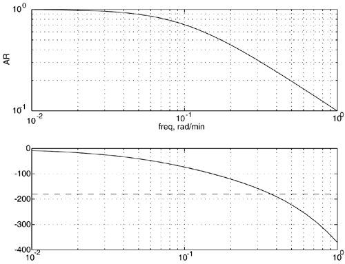
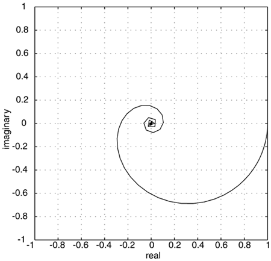
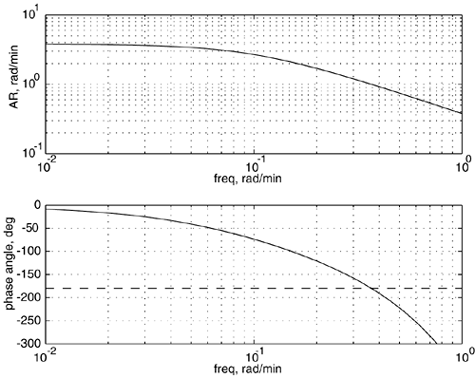
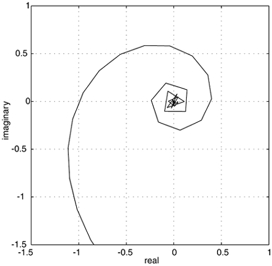

| [ Team LiB ] |
|
M6.3 Bode AnalysisHere, we enter the first-order + time-delay model in the MATLAB command window. » fodt = tf([1],[10 1],'InputDelay',5) Transfer function: 1 -------- 10 s + 1 Input delay: 5 Now, let us perform a Bode analysis assuming a proportional controller gain of 1. » kc = 1; » [mag,phase,w] = bode(kc*fodt); » subplot(2,1,1), loglog(w,squeeze(mag)) » subplot(2,1,2), semilogx(w,squeeze(phase),[0.01 1], [-180 -180],'--') The resulting Bode plot, with the –180° line drawn for convenience, is shown in Figure M6-3. Notice that the crossover frequency is around 0.36 rad/min, where the amplitude ratio is approximately 0.26. The gain margin is then 1/0.26 = 3.8. This means that the controller gain could be increased to roughly 3.8 before the process goes unstable. This is consistent with the finding of kc = 3.8 for instability, shown in the previous section (time-domain simulation). Figure M6-3. Bode plot of gc(s)gp(s) for kc = 1. The gain and phase margins can be calculated using the following MATLAB function: » [Gm,Pm,Wco,Wpm] = imargin(squeeze(mag),squeeze(phase),w) Gm = 3.80093442825351 Pm = Inf Wco = 0.36655875121677 Wpm = NaN where wco is the crossover frequency (where f = –180°) and wpm is the frequency where AR = 1. Gain MarginThe gain margin of 3.8 indicates that the controller gain can be increased from 1 to 3.8 before the process becomes unstable—again, this is consistent with the previous results. Also notice that the phase margin is infinity. This is because the amplitude ratio is always less than 1 (it is exactly 1 only at 0 frequency, when the proportional gain is 1). Crossover Frequency/Ultimate PeriodThe crossover frequency is 0.366 rad/minute. Converting this to cycles/minute, we find a frequency of 0.0583 cycles/minute, which corresponds to a period of 1/0.0583 = 17.16 minutes. This is exactly the value found in the time-domain simulations. Nyquist DiagramThe Nyquist plot (Figure M6-4) can be generated by using the following commands: » [re,im,w] = nyquist(kc*fodt); » plot(squeeze(re),squeeze(im)) Figure M6-4. Nyquist plot of gc(s)gp(s) for kc = 1. Problem 1. Use a controller proportional gain of 3.8 and perform a Bode analysis to show that the amplitude ratio is 1 at the crossover frequency. What is the phase margin and frequency when AR = 1 (for the controller proportional gain of 3.8)? Solution The Bode and Nyquist plots for gc(s)gp(s) with kc = 3.8 are shown in Figures M6-5 and M6-6. Notice that the phase margin is 1 (the AR = 1 at the crossover frequency) and the phase margin is 0 (the phase angle is -180° when the AR = 1). Figure M6-5. Bode plot of gc(s)gp(s) for kc = 3.8. Notice that the gain margin is 1 and the phase margin is 0°, indicating that the system is on the verge of instability. Figure M6-6. Nyquist plot of gc(s)gp(s) for kc = 3.8. The Nyquist curve passes through the critical point (–1,0), indicating the system is on the verge of instability. This is also shown by the gain and phase margin analysis from MATLAB: » kc = 3.8; » [mag,phase,w] = bode(kc*fodt); » [Gm,Pm,Wco,Wpm] = imargin(squeeze(mag),squeeze(phase),w) Gm = 1.00024590217198 Pm = 0.03106191271067 Wco = 0.36655875121677 Wpm = 0.36646150971664 Notice that the gain margin is effectively 1, the phase margin is effectively 0, and the crossover and phase margin frequencies converge to 0.366 rad/min. |
| [ Team LiB ] |
|